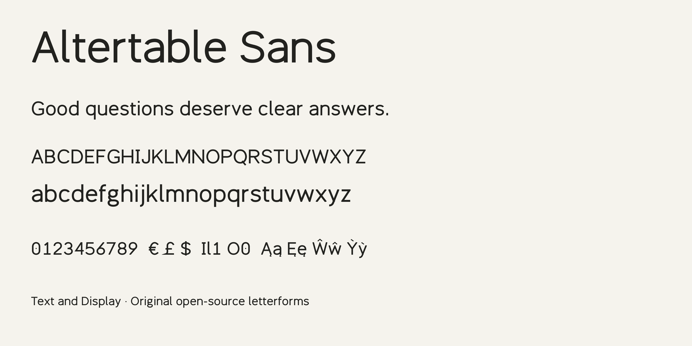

Altertable Sans is an open-source typeface designed for interfaces, data-rich applications, and the web. Broad proportions and open counters give its letters room to breathe at reading sizes. A barred capital I, a tailed lowercase l, and a dotted zero help distinguish characters in identifiers and numerical tables.
The Text family includes Light, Regular, Medium, SemiBold, and Bold weights, each with a matching italic. The italics use single-storey a and g forms. Regular Display has tighter spacing and a lighter stroke than Regular Text. Tabular figures are the default for aligned columns; the proportional-figure feature offers narrower numerals for running text.

The family supports Latin Core characters, extended Latin letters, and combining accents. Its source drawings are original and are released with the font under the SIL Open Font License 1.1. Editable UFO sources and a Python geometry generator are available in the project repository. The design remains experimental: technical validation is accompanied by visual testing at reading and display sizes.
To contribute, visit the Altertable Sans repository.